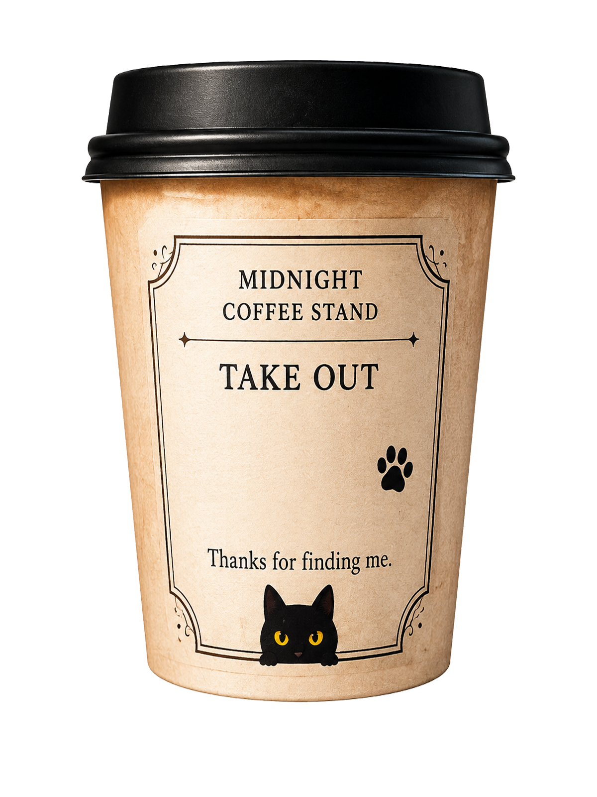
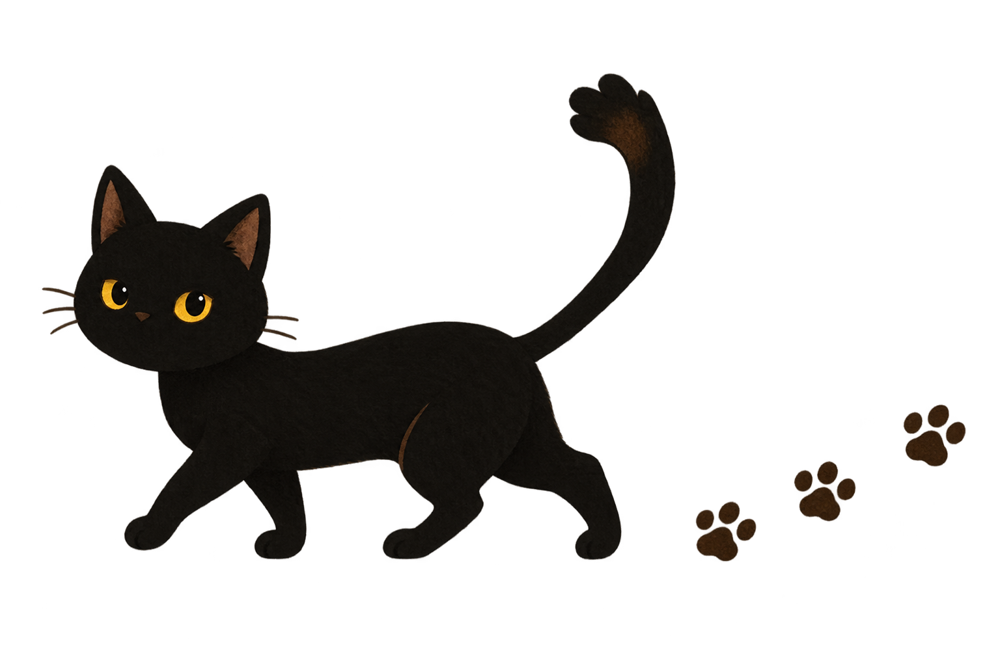
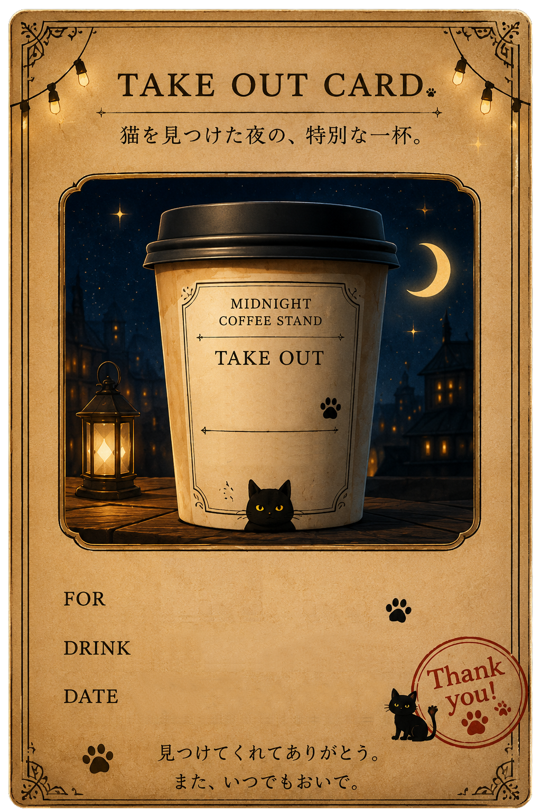

OPEN ONLY AFTER MIDNIGHT
眠れない夜にだけ、 ひっそり灯る珈琲屋台。
音を立てずに、そっとお入りください。
SECRET TAKE OUT
あ、お前…どこ行ってたんだよ… つか見つけてくれてありがとなぁ？ お礼に、これ、持ってけ
MIDNIGHT COFFEE STAND / TAKE OUT
帰り道、冷める前に飲めよ。

TAKE OUT COMPLETE

気が向いたら、 また見つけに来てにゃ

今夜も、ひとり分だけ席が空いている。